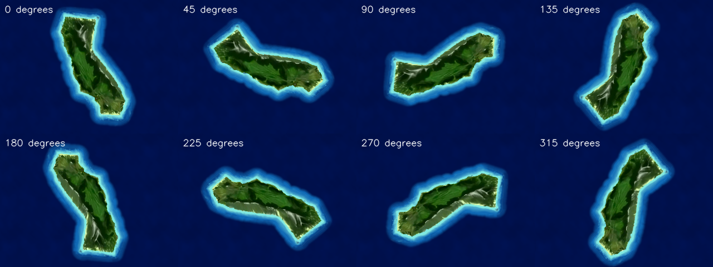
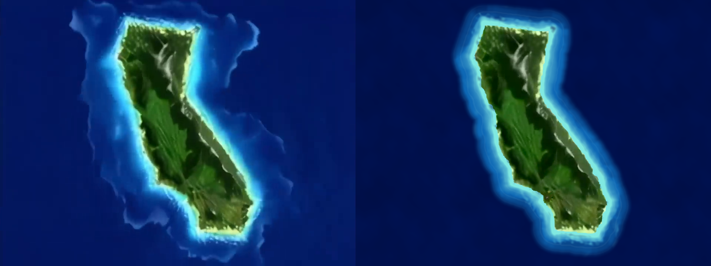

Island V3 — Animated water
Subtle shore waves follow the rotating coast. Deep-water ripples stay anchored to the surrounding sea.
Open interactive preview · Use Water for a stationary island, Rotate for attract, and Pause to hold the same water phase.
Water motion at normal speed
The camera is held still to make the faint waves easier to inspect. The five-second review video loops; the live water clock continues indefinitely.
Complete island rotation
One full 72-second turn. This inspection recording samples at 5 fps; it is not a performance measurement.

Reference and animated reconstruction

Reference on the left; live rendering on the right. The cyan shape is derived from the reference. Wave shape, timing, and deep-water noise are authored approximations; the original frozen outer wave rings are replaced by animated shading.
Scope and checks
One opaque plane, two triangles, one material, a 1024-square packed data map, and a 256-square periodic noise texture. Pause/seek, phase wraps, world anchoring, full rotation, browser focus, and package isolation are checked. V2 terrain and camera approval is recorded. Seamless video blending is V4; production integration is V5; phone performance remains V6.